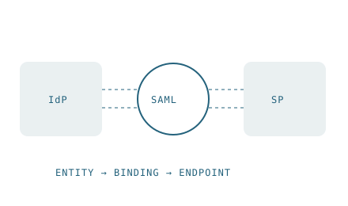

Identity explorer
Follow the identity handoff.
Explore entities, endpoints, bindings, and certificate fingerprints inside SAML metadata.

Metadata source
Entity report
Ready when you are
Load an example or paste your own input.
How to use SAML Fixture Lab
- Paste IdP or SP XML or load the two-entity example.
- Inspect the metadata, then select an entity.
- Review bindings, endpoints, and certificate fingerprints.